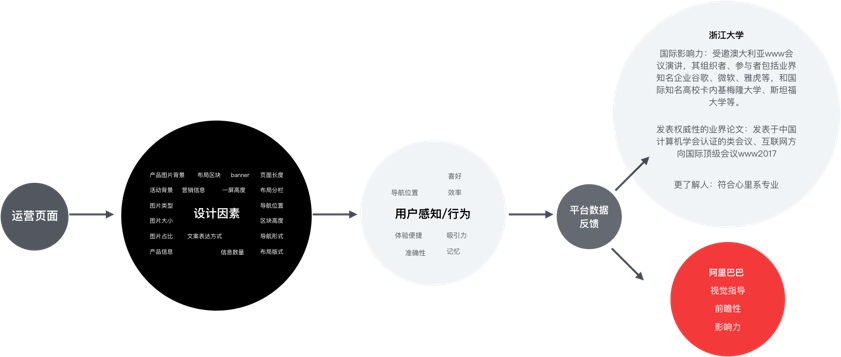

PC端-基于用户偏好与心智模型的设计研究
通过开展用户研究实验，对实验参与者进行访谈、偏好分析、眼动及手势分析等实验手段，获得参与者的认知、行为、偏好数据，通过统计学分析方法估计目标用户的整体偏好和行为方式，得出指导设计师进行交互设计和视觉设计的设计守则

通过开展用户研究实验，对实验参与者进行访谈、偏好分析、眼动及手势分析等实验手段，获得参与者的认知、行为、偏好数据，通过统计学分析方法估计目标用户的整体偏好和行为方式，得出指导设计师进行交互设计和视觉设计的设计守则